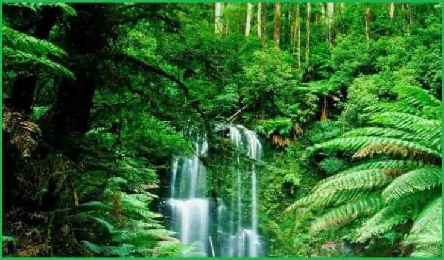
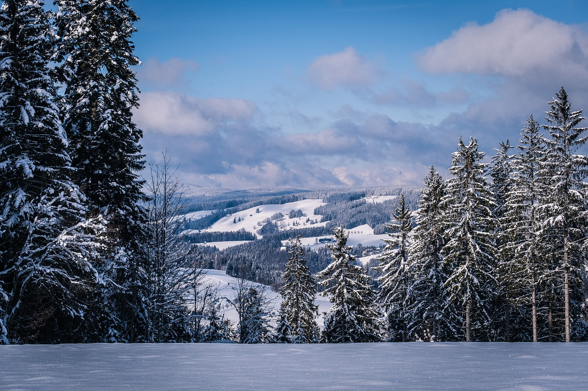
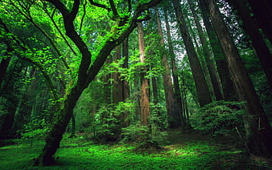
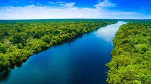
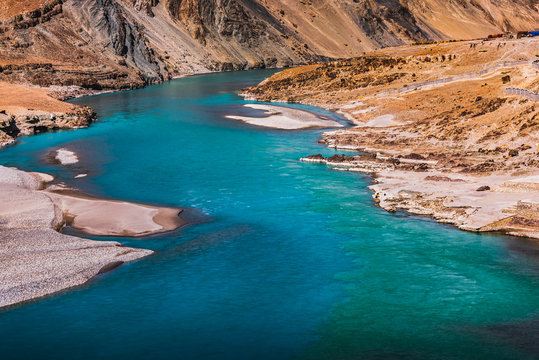

Nature is the connection between the physical world surrounding us and the life inside us. Nature is God’s most precious and valuable gift to humans. It is the principal source of all essential nutrients for all living things on the planet. Nature is one of the topics on which we might be asked to write a paragraph. Check the samples provided in the article to learn how to write one on your own.Everything we see around us constitutes nature, including the sun, the moon, trees, flowers, fruits, human beings, birds, animals, etc. In nature, everyone depends on one another to keep the ecosystem healthy. For survival, every creature is interrelated and reliant on one another. Humans, for example, rely on nature for their survival, and nature provides us with oxygen, food, water, shelter, medicines, and clothing, among other things. Many shades may be seen in nature, contributing to the planet’s beauty. Along with humans, animals and birds also find their habitat and means of survival in nature. Therefore, it is essential to take proper care of our nature to maintain a healthy life.Nature is beautiful, yet it is difficult to put into words. Nature is honoured with a variety of religious traditions. The primary source of life on Earth is the components that exist naturally. All of the elements are linked. Natural ingredients can never be substituted. Humans process natural materials for use in today’s ever-changing world and destroy their rawness and individuality. Human activities have an impact on nature, and as a result, the quality of the environment is deteriorating. Deterioration of nature is primarily caused by pollution of the air and water. The oxygen produced by a single fully-grown tree is enough to supply ten people, and the amount of oxygen released by a forest is unquestionably adequate for a metropolis or town. Nature is a healer, and it is the foundation for many industries. Nature, on the other hand, is both a giver and a taker, according to legends. Earthquakes, volcanic eruptions, floods, and cyclones are examples of natural calamities. These disasters, which occur as a result of natural causes, have resulted in significant damage. The benefits of sunlight and fresh air to our health cannot be overstated. Nature has a variety of beneficial effects on our bodies. For recuperation and vacations, people choose natural settings. People prefer to raise their children in the countryside in the United States. Their primary goal is to introduce their children to the benefits of natural beauty.
FORESTS

Pine tree branches are extremely flexible, which allows them to handle a heavy snowfall without the branches snapping off. Pine tree seeds are protected in cones, allowing them to survive harsher temperatures.

The Black Forest (German: Schwarzwald, pronounced [ˈʃvaʁt͡svalt]) is a large forested mountain range in the state of Baden-Württemberg in southwestern Germany. It is bounded by the Rhine valley to the west and south. Its highest peak is the Feldberg with an elevation of 1,493 metres (4,898 ft). The region is almost rectangular in shape with a length of 160 km (99 mi) and breadth of up to 60 km (37 mi).

Amazon Rainforest, large tropical rainforest occupying the drainage basin of the Amazon River and its tributaries in northern South America and covering an area of 2,300,000 square miles (6,000,000 square km). Comprising about 40 percent of Brazil’s total area, it is bounded by the Guiana Highlands to the north, the Andes Mountains to the west, the Brazilian central plateau to the south, and the Atlantic Ocean to the east.
PINE FOREST
BLACK FOREST
AMAZON FOREST
RIVERS
The Nile River flows over 6,600 kilometers (4,100 miles) until emptying into the Mediterranean Sea. For thousands of years, the river has provided a source of irrigation to transform the dry area around it into lush agricultural land. Today, the river continues to serve as a source of irrigation, as well as an important transportation and trade route.

Amazon river flows in South America covering many countries. Amazon River is the world’s second-longest river after the river Nile in Africa. Amazon river is the largest river in the world by discharge volume of water. This article will provide some interesting insights into the Amazon river.

River, great trans-Himalayan river of South Asia. It is one of the longest rivers in the world, with a length of some 2,000 miles (3,200 km). Its total drainage area is about 450,000 square miles (1,165,000 square km), of which 175,000 square miles (453,000 square km) lie in the ranges and foothills of the Himalayas, the Hindu Kush, and the Karakoram Range; the rest is in the semiarid plains of Pakistan.